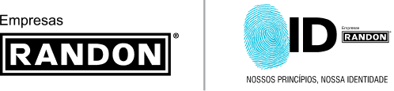

fundamentos estratégicos
NOSSO PROPÓSITO É CONECTAR PESSOAS E RIQUEZAS, GERANDO PROSPERIDADE
NOSSOS PRINCÍPIOS
- Pessoas valorizadas e respeitadas
- Pessoas valorizadas e respeitadas
- Pessoas valorizadas e respeitadas
- Pessoas valorizadas e respeitadas
- Pessoas valorizadas e respeitadas
negócio
Excelência e inovação para serviços
de Engenharia, Ensaios e Testes.
visão
Ser a primeira opção em serviços
tecnológicos para as Empresas Randon e
para o mercado brasileiro da mobilidade,
tornando-se referência na América Latina,
até 2024.
visão
Ser um Centro Tecnológico
autossustentável, capaz de manter-se
atualizado para fornecer resultados
sigilosos, confiáveis e imparciais aos
clientes, gerando diferencial competitivo
para as Empresas Randon.
POLÍTICA DO
SISTEMA DE GESTÃO
SISTEMA DE GESTÃO
POLÍTICA DO SISTEMA DE GESTÃO
Para as Empresas Randon, a pessoa em sua integridade é um valor que está acima das demais
prioridades, onde nenhuma situação de emergência, produção ou resultado pode comprometer a
saúde ou a segurança das pessoas. Nossos fundamentos estratégicos são suportados pelas seguintes diretrizes:
Proporcionar um ambiente seguro, saudável com o compromisso de eliminar perigos e
reduzir riscos
A empresa é responsável pela preservação do meio ambiente, a liderança e cada
funcionário também têm
a responsabilidade em zelar pelo meio ambiente, protegendo-o e prevenindo a poluição.
Proporcionar um ambiente seguro, saudável com o compromisso de eliminar perigos e
reduzir riscos
A empresa é responsável pela preservação do meio ambiente, a liderança e cada
funcionário também têm
a responsabilidade em zelar pelo meio ambiente, protegendo-o e prevenindo a poluição.
Proporcionar um ambiente seguro, saudável com o compromisso de eliminar perigos e
reduzir riscos
A empresa é responsável pela preservação do meio ambiente, a liderança e cada
funcionário também têm
a responsabilidade em zelar pelo meio ambiente, protegendo-o e prevenindo a poluição.
Revisão: 01/2020

Estrada Arziro Galafassi, s/no
Linha Palmeiro • Farroupilha • RS
Tel.: (+55 54) 3239.1000 - campo.provas@fras-le.com
Créditos Fotográficos: Júlio Soares, Magrão Scalco, João Carlos Lazzarotto e Banco de Imagens das Empresas Randon.
COPYRIGHT © CAMPO DE PROVAS EMPRESAS RANDON. TODOS OS DIREITOS RESERVADOS.